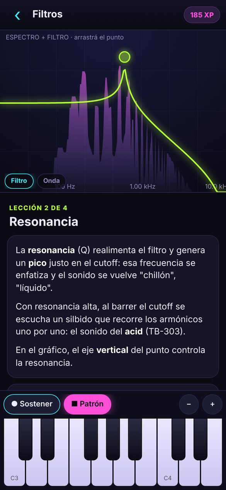
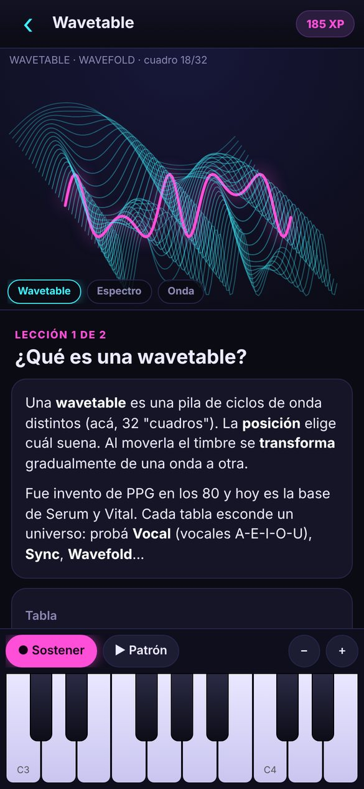
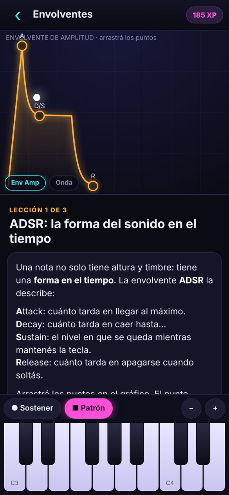
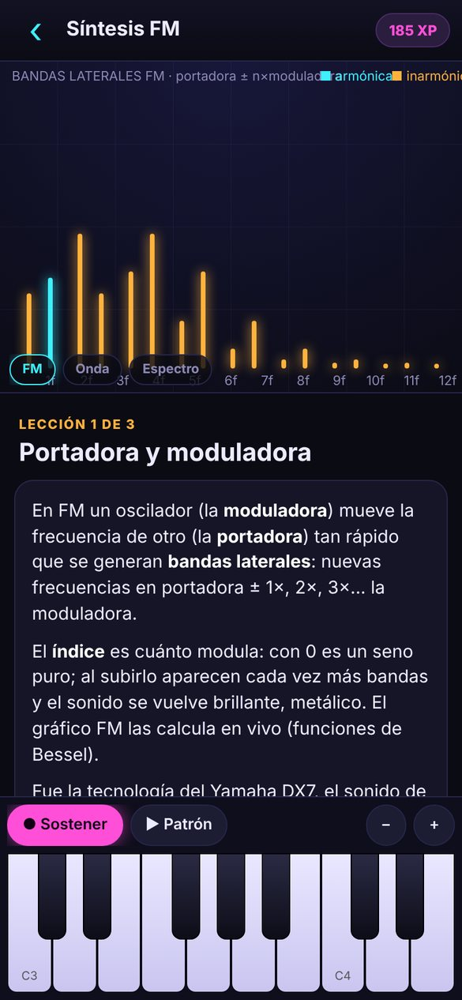
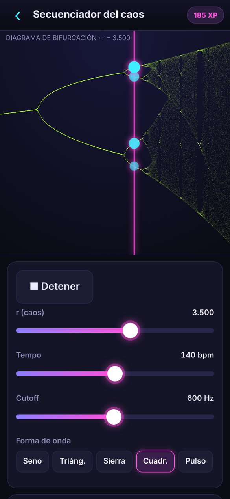
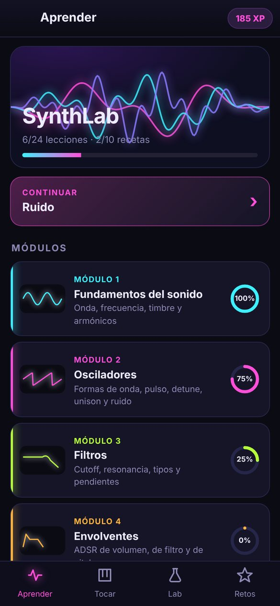
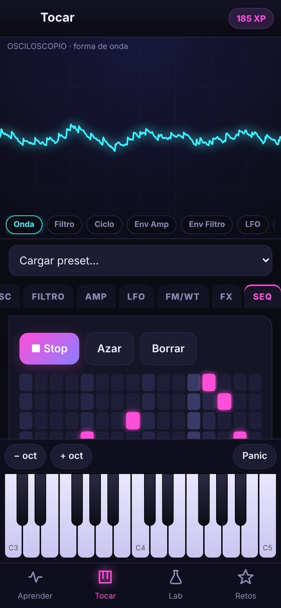
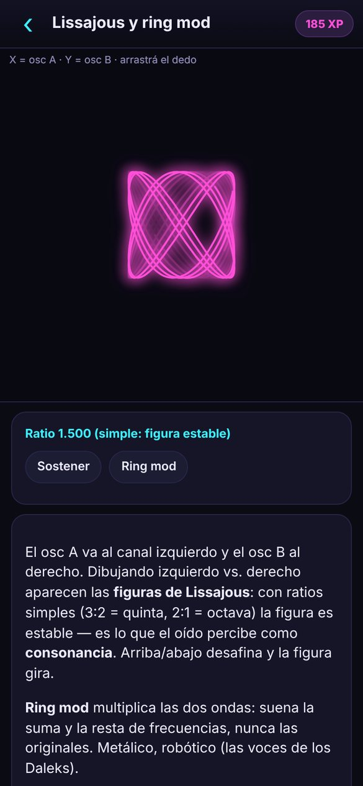
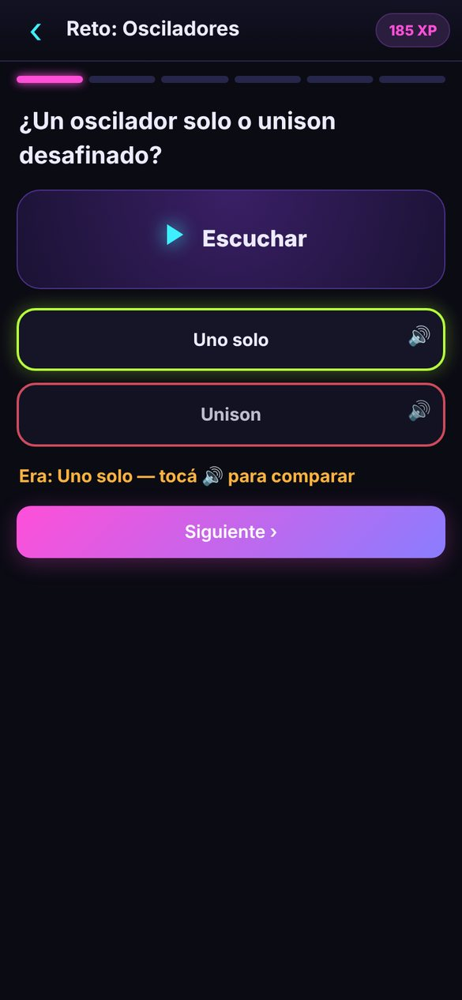
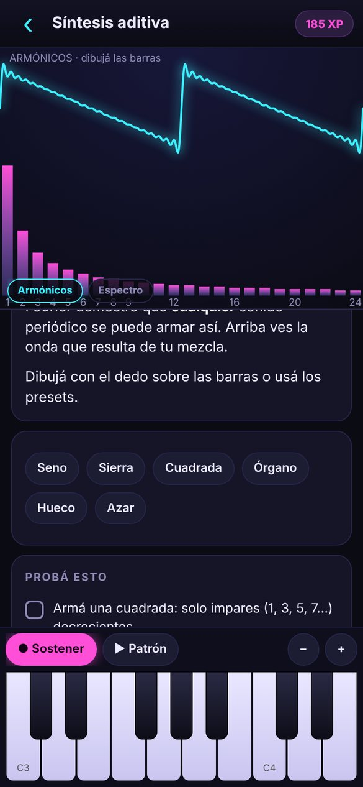

Osciladores, filtros, envolventes, LFO, FM, wavetable y aditiva. Cada concepto con su sonido y su gráfico en vivo: movés una perilla y ves lo que escuchás.





Nada de teoría seca: cada pantalla tiene un sonido que podés tocar y un gráfico que reacciona.

9 módulos con lecciones cortas. Cada una tiene un visualizador en vivo, controles y tareas que se marcan solas cuando las lográs.

Un sintetizador completo con secuenciador de 16 pasos.

Experimentos para entender el sonido desde otros ángulos.

¿Qué forma de onda es? ¿Qué filtro? ¿Vibrato o trémolo? Y los desafíos "igualá el sonido": escuchás un objetivo y lo reproducís moviendo un control.
Pensado para quien ya escuchó hablar de osciladores y filtros y quiere entenderlos de verdad.

Arrancás con un oscilador pelado y cada paso agrega una pieza mientras lo escuchás. Tocá una receta para oír una muestra.
SynthLab no está en la Play Store: se instala directo desde el archivo APK. Funciona sin internet y pesa menos de 100 KB.
Desde el celular, tocá Descargar.
Desde la notificación de descarga o desde Archivos → Descargas.
Android te pide permitir apps de esta fuente: Configuración → activar → volver.
Si Play Protect avisa, tocá "Más detalles" → "Instalar de todas formas".
¿Tenés iPhone o compu? Usá la versión web: es la misma app, en el navegador.
Gratis, sin anuncios, sin cuentas.